Flying Squirrel Entertainment
Battle Cry of Freedom
Level Designer / QA · March 2022 – March 2023
- Level Design
- Blockout
- Terrain Pass
- Historical Research
- Playtesting
- QA
- Combat Readability
Trailer
Project Information
- Release page
- View page
- Release Year
- 2022
- Studio
- Flying Squirrel Entertainment
- Position
- Level Designer / QA
Ownership and Outcome
Large-scale historical multiplayer shooter set during the American Civil War. My work focused on research-driven level design, terrain development, landmarking, sightline control, route readability, and multiplayer flow for large battle spaces that had to support both authenticity and playability under heavy player counts.
Responsibilities
- Researched historical battles and real-world locations to support map planning, environmental authenticity, and landmark selection.
- Produced paper designs, terrain roughouts, blockouts, terrain passes, and final layout polish for multiplayer spaces and mode-specific flow.
- Used cover, elevation, structures, ridgelines, and visual anchors to shape movement, combat readability, and battle rhythm under pressure.
- Supported playtesting, set dressing, and QA so final maps remained both believable and playable.
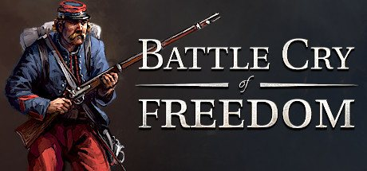
Gallery
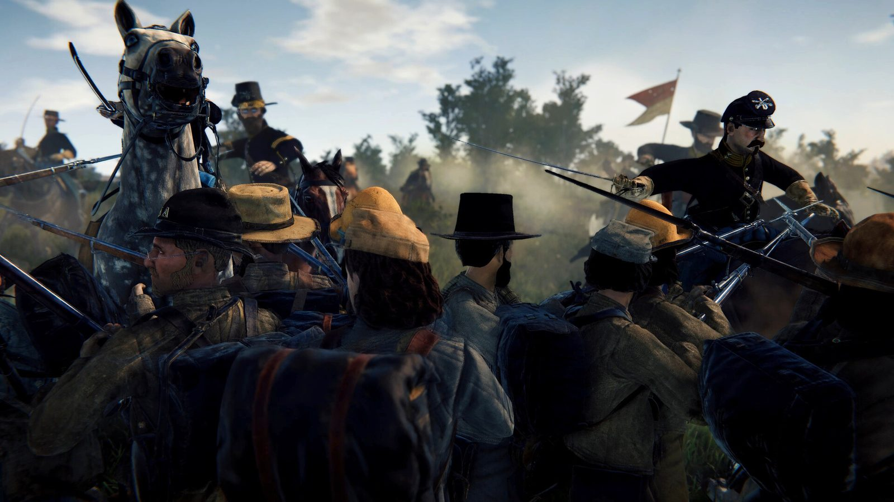
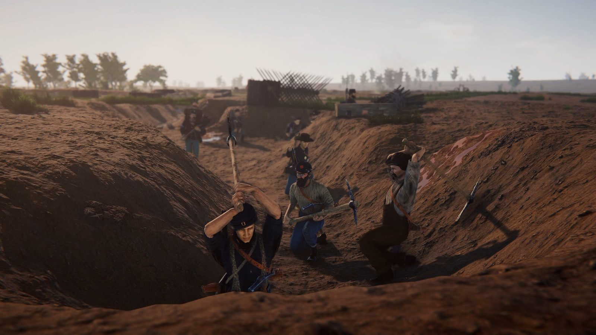
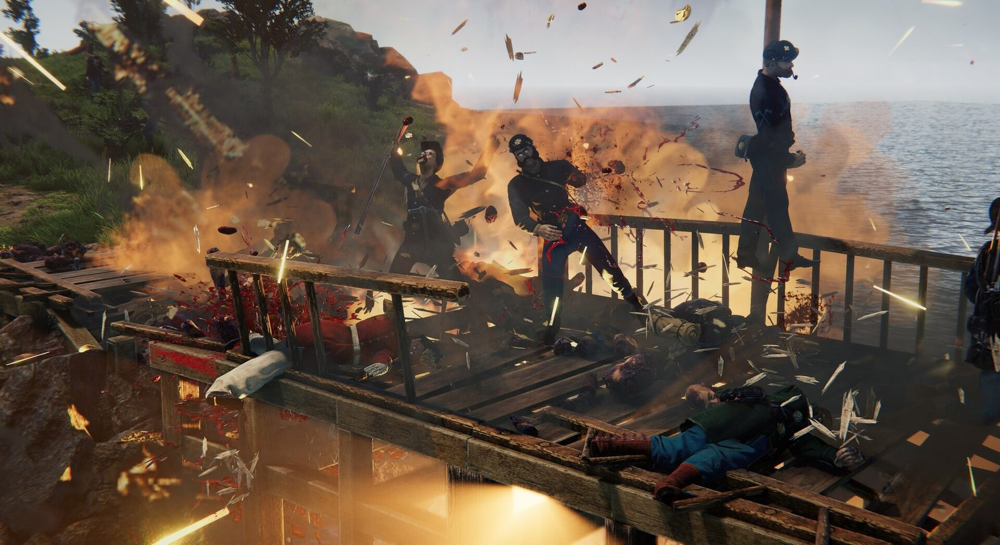
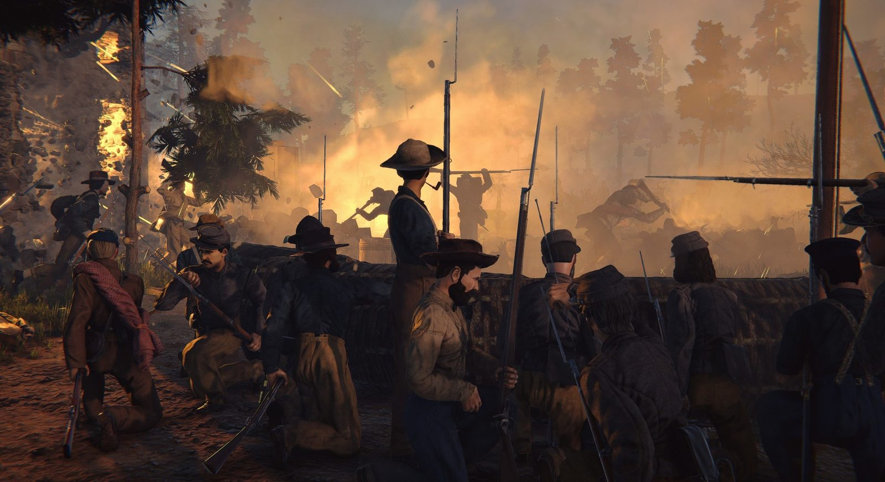
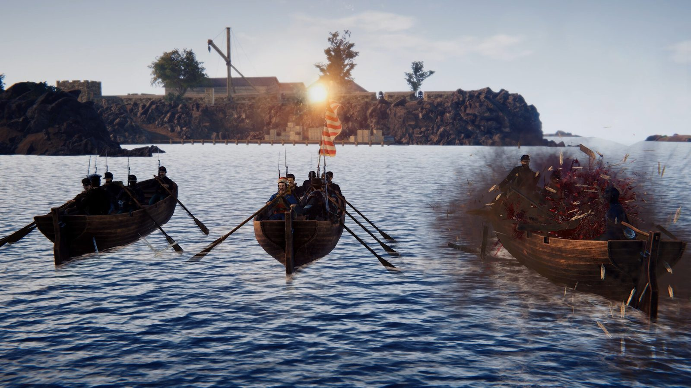
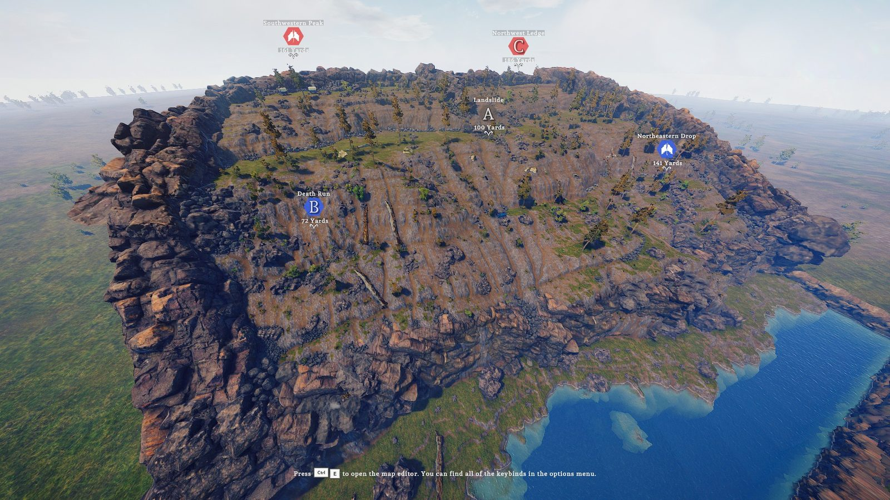
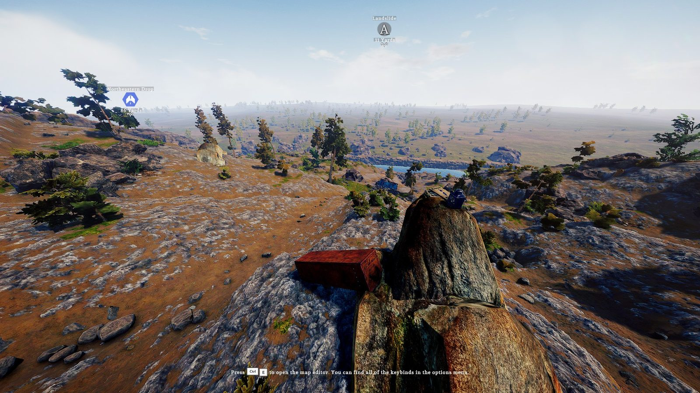
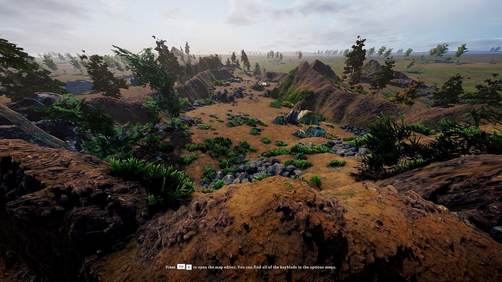
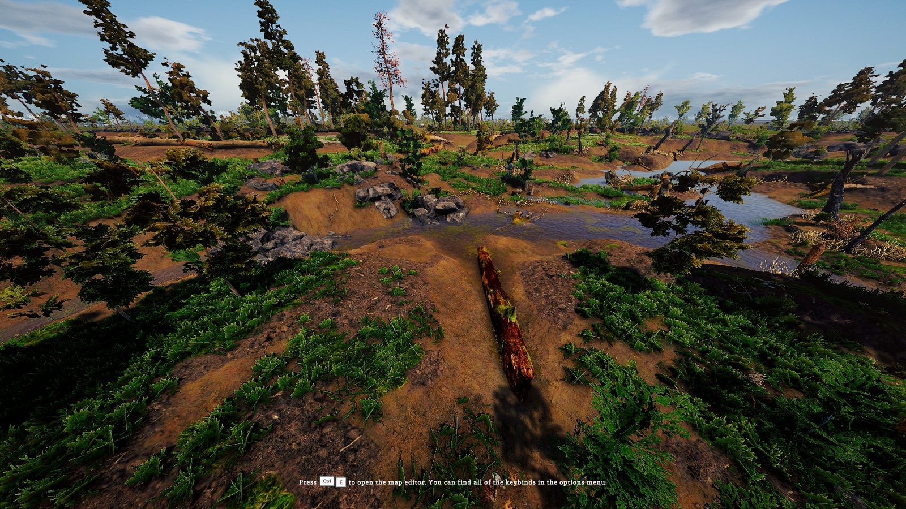
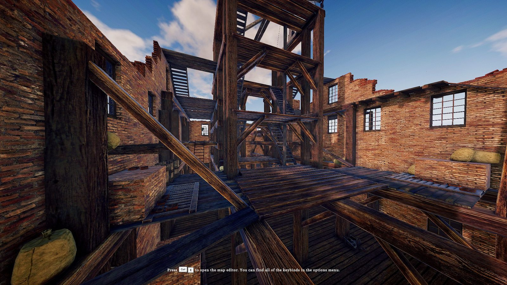
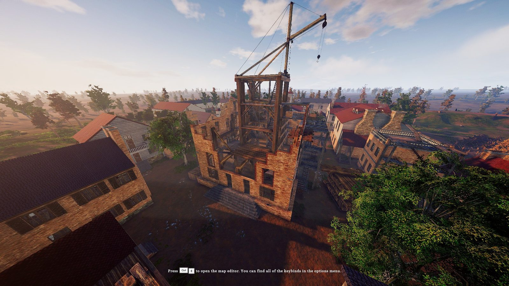
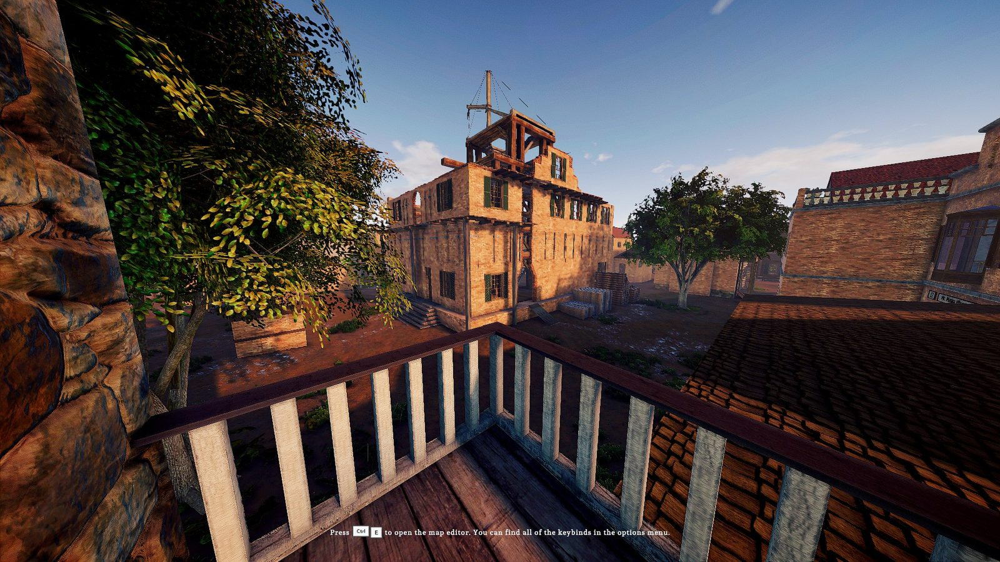
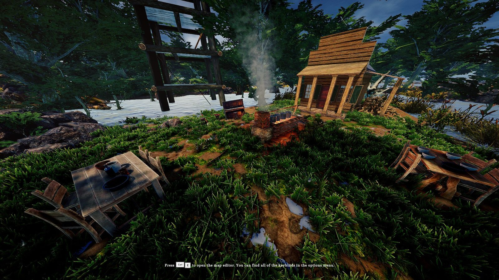
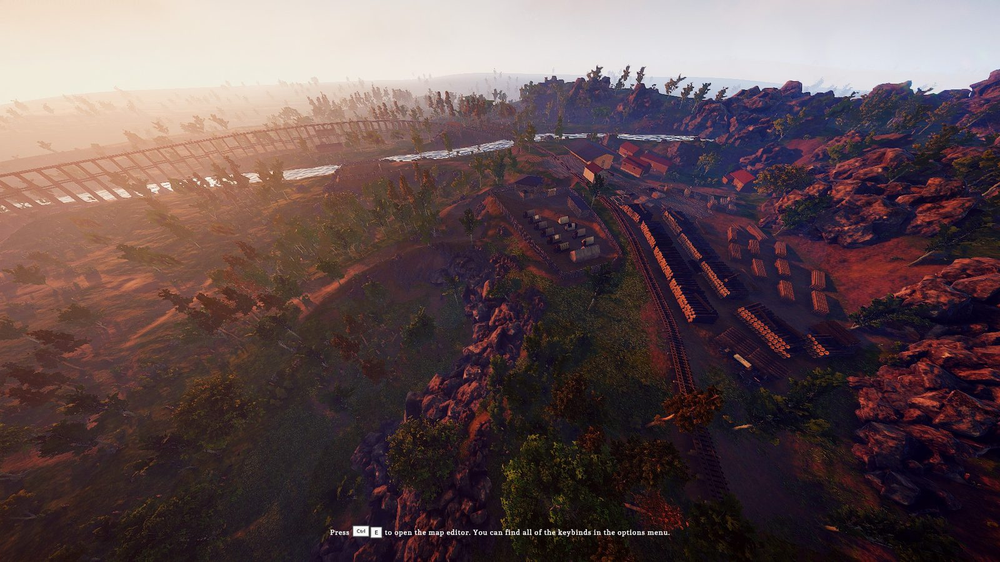
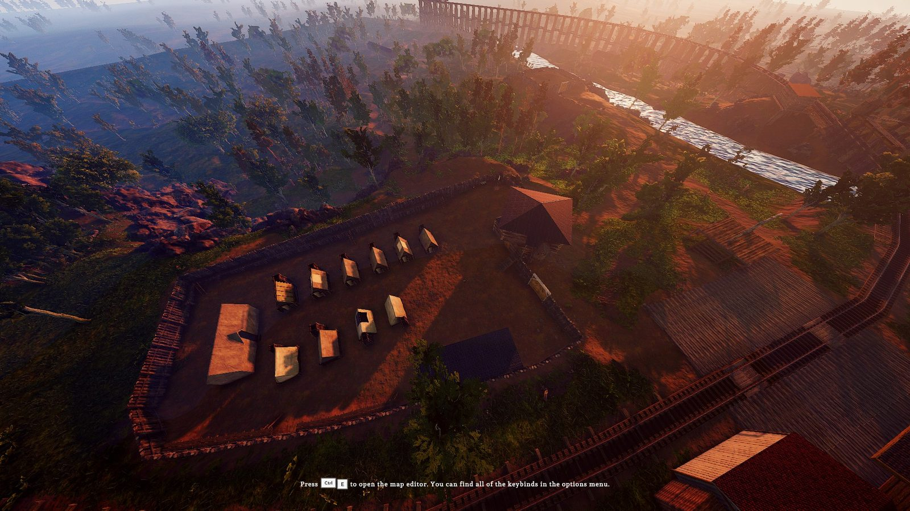
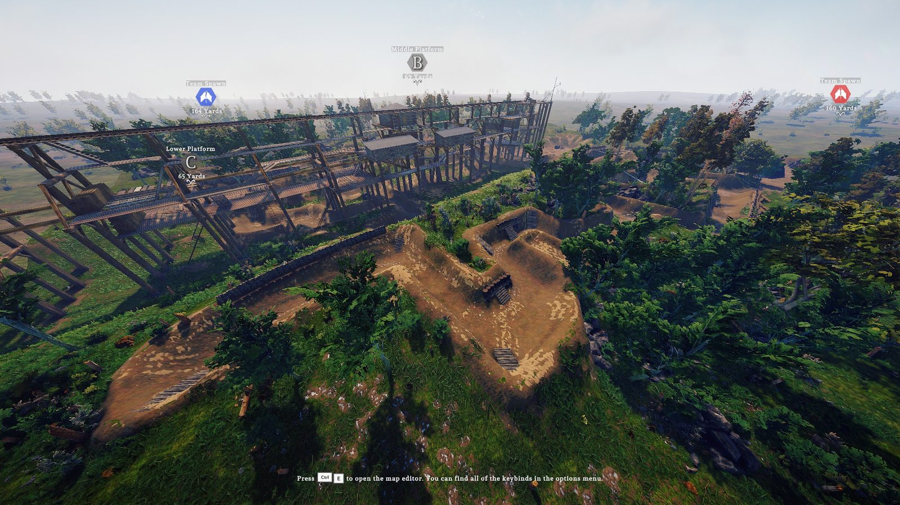
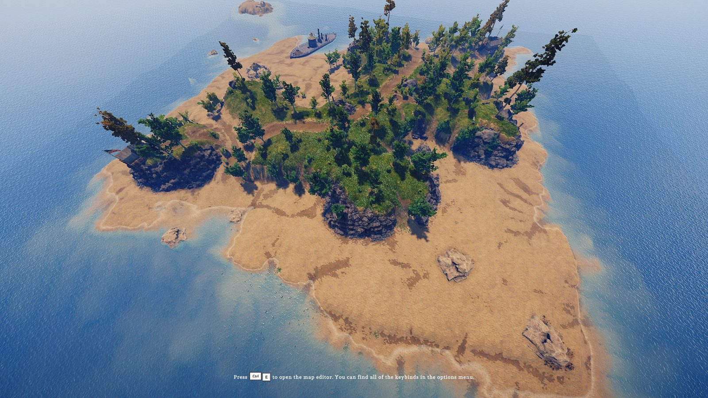